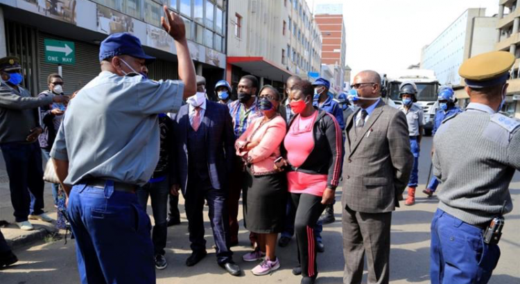
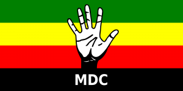

Zimbabwe Police Arrest Opposition Leaders in Internal Dispute
Police in Zimbabwe arrested several leaders of the main opposition party, MDC, on Friday who wanted to evict a rival faction that currently occupies the movement’s headquarters in the country’s capital, Harare.The Movement for Democratic Change (MDC), has been divided since the death of its founder, the country’s then-opposition leader, Morgan Tsvangirai, two years ago.
These internal divisions were revived in March of this year when the Zimbabwe Supreme Court, which happens to be controlled by the country’s current president, Emmerson Mnangagwa, ruled that the MDC leader since Tsvangirai’s death, Nelson Chamisa, had been illegally appointed.Tsvangirai, a former union leader, founded the party in 1999.
Most party members maintain their confidence in Nelson Chamisa, but his rivals have appointed one of their own to be the interim leader of the MDC.The anti-Chamisa faction, which enjoys the backing of the Mnangagwa administration, occupied the MDC headquarters in Harare on Thursday night.
On Friday, party officials loyal to Nelson Chamisa, led by the nation’s former Finance Minister, Tendai Biti, tried to enter the party headquarters, but were prevented from doing so by the nation’s security forces under instructions from the Mnangagwa-led administration.
Tendai Biti and five other MDC cadres were arrested and taken to the central police station in Harare, reporters at the French news agency, AFP said.
'We are the rightful owners of the building and you have had no court order to stop us from entering,' Biti told the police officers deployed by the government to bar them from accessing the building.Biti served as finance minister from 2009 to 2013, during a coalition government between the country’s former leaders, Tsvangirai and President Robert Mugabe.
'We acquired this building in 2002.Everyone knows that, so you cannot deny our workers the right to use this building,' he added.Tendai Biti also accused the President, Emmerson Mnangagwa, of bankrolling the rival MDC faction to fight the Chamisa led faction.'Shame on you, Mnangagwa!'he said.
Nelson Chamisa was the MDC’s candidate for the 2018 presidential election, won (albeit controversially) by Mnangagwa.The opposition never acknowledged this victory, which considered that the elections were tainted by multiple instances of fraud.
The opposition to date maintains that, as per their private tally, their 42-year old candidate beat the 77-year old Mnangagwa, hands down.However, they say the state machinery was used to deny the youthful Chamisa victory.
Tsvangirai saw in Chamisa leadership qualities quite early, and embarked on mentoring him.The youthful leader is not only charismatic and eloquent but his witty, acerbic, and humorous oratory skills always leave many in stitches during his rallies and news conferences.
Located in the Southern part of the Africa continent, Zimbabwe is faced by a myriad of challenges.Aside from political instability, the country is also faced by extreme poverty levels, especially in the rural areas, hunger, youth unemployment, and recently, the coronavirus.
The pandemic is a great challenge to the nation, owing to its poor state of economy, which is on its death bed, so to speak.Following Mugabe’s ouster from power, many Zimbabweans had hopes in the new president, Mnangagwa.Their hopes have since faded as things have remained the same, if not become worse under his stewardship.
[bsa_pro_ad_space id=4]
Share on Facebook Tweet Follow us
Posted On: 2020-06-06T00:00:00
Posted By: Vincent Ferdinand





Content Date: 2020-06-06
Download Date: 2021-07-08
Document ID: L0C04D57N